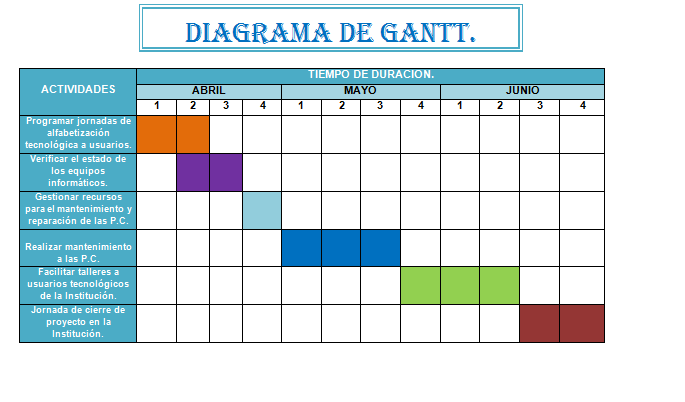
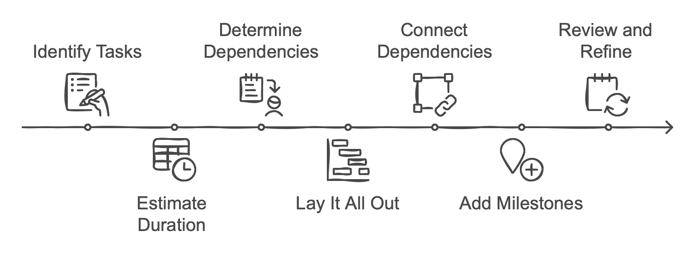
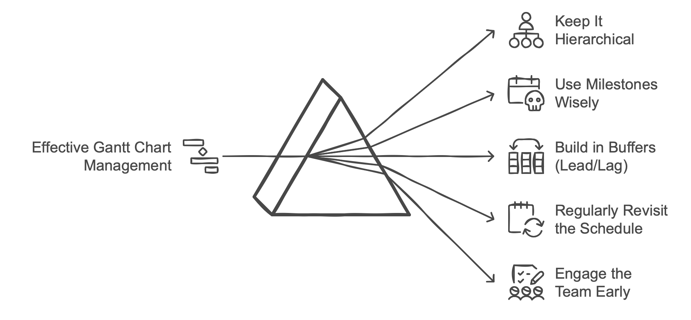
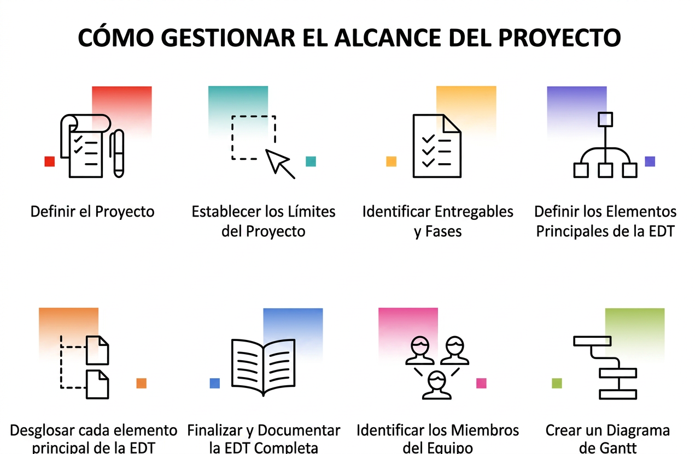

Planifica, gestiona y visualiza la línea de tiempo de tus proyectos con éxito.
Es una herramienta gráfica cuyo objetivo es exponer el tiempo de dedicación previsto para diferentes tareas o actividades a lo largo de un tiempo total determinado. Es fundamental en la gestión de proyectos modernos.

Contiene dos ejes principales: el eje vertical que detalla las actividades a realizar, y el eje horizontal que representa el cronograma (días, semanas, meses).
Ofrece una vista clara del progreso, ayuda a identificar las dependencias entre tareas y mejora drásticamente la comunicación del equipo.
Aunque lleva el nombre de Henry Gantt, los primeros conceptos de esta herramienta fueron desarrollados a finales del siglo XIX. Su impacto revolucionó la ingeniería industrial y la gestión de operaciones a nivel global.

El ingeniero polaco creó el harmonogram, un precursor del diagrama. Sin embargo, publicó sus investigaciones en polaco y ruso, lo que limitó su adopción en el mundo occidental.
El ingeniero estadounidense diseñó su propia versión para permitir que los gerentes de producción vieran si el trabajo estaba programado a tiempo. Su adopción masiva llegó al ser utilizado en la Primera Guerra Mundial.
Utiliza los controles inferiores para modificar el progreso de las actividades en tiempo real.
Para construir un diagrama efectivo que guíe con precisión a tu equipo de trabajo, se deben seguir una serie de pasos metodológicos esenciales:

Haz una lista analítica de todas las actividades requeridas para completar el proyecto de principio a fin, desglosándolas en bloques manejables.
Determina qué actividades no pueden comenzar hasta que otra haya terminado. Esto define la secuencia lógica y evita cuellos de botella.
Calcula la duración estimada para cada tarea (fechas fijas de inicio y entrega) y designa a las personas responsables de ejecutarlas.
Aunque es una metodología sumamente visual, una mala configuración inicial puede volver obsoleto el diagrama durante el ciclo de vida del proyecto.

Añadir microtareas irrelevantes satura visualmente el diagrama. Mantén el enfoque en los hitos importantes y entregables clave.
Un diagrama de Gantt es un documento vivo. Si el proyecto sufre retrasos y el diagrama no se actualiza, pierde toda su utilidad de monitoreo.